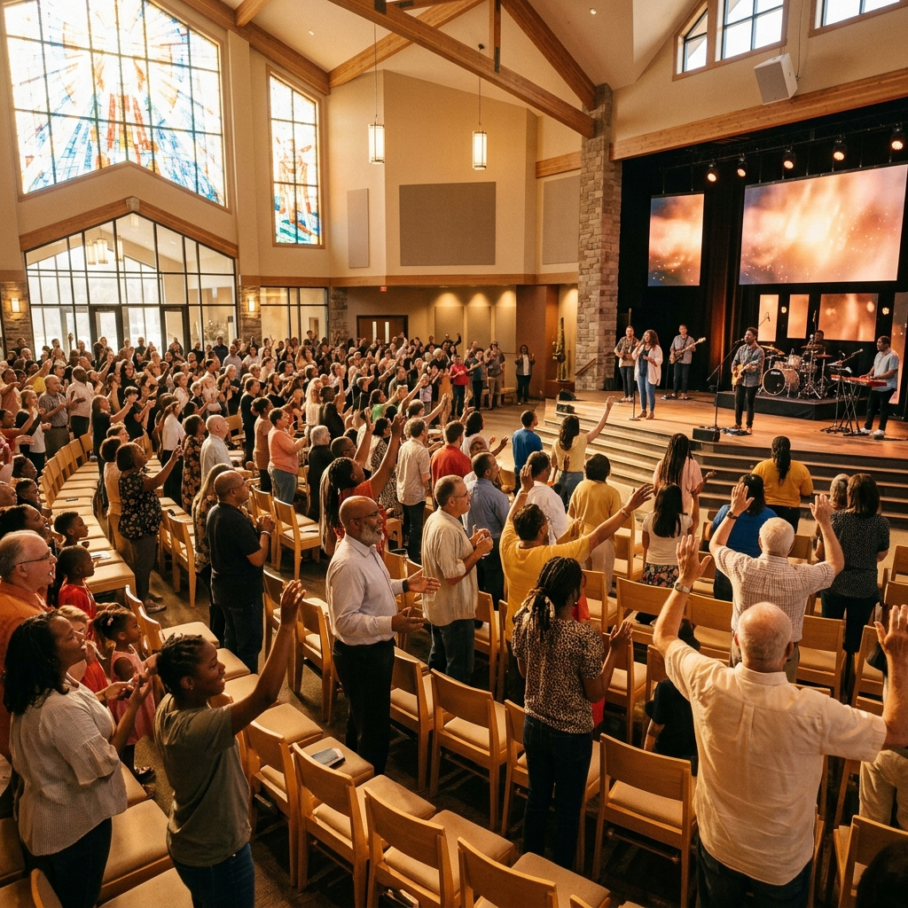

Latest
Hope Series
Walking in the Light of His Promise

Faith Series
The Anchor That Holds
Community Series
Better Together: The Power of Community
Bible Study
Psalms: Songs for Every Season
Hope Series
When Hope Feels Distant
Faith Series
What Really Matters